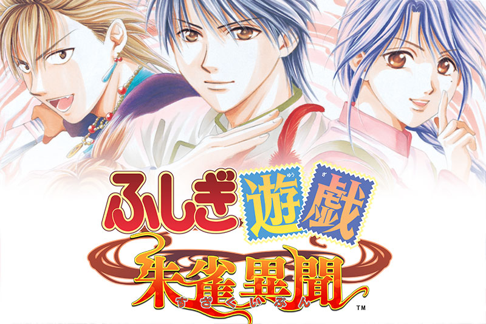

鬼宿
朱雀七星士之一，星座位于额头的青年。与主人公一同被卷入书中世界的命运之人。

Fushigi Yuugi ~Suzaku Ibun~ 完全攻略 · 朱雀七星士全路线
| 项目 | 内容 |
|---|---|
| 游戏名 | ふしぎ遊戯 朱雀異聞（不可思议游戏 朱雀异闻） |
| 发售日 | 2008/05/31 |
| 对应机种 | PlayStation 2 |
| 类型 | 女性向恋爱 ADV |
| CERO | 12 岁以上对象 |
声优表
| 角色 | 声优 |
|---|---|
| 鬼宿 | 宮野真守 |
| 星宿 | 小西克幸 |
| 柳宿 | 皆川純子 |
| 井宿 | 宮田幸季 |
| 翼宿 | 鳥海浩輔 |
| 轸宿 | 三宅健太 |
| 张宿 | 木村亜希子 |
朱雀七星士之一，星座位于额头的青年。与主人公一同被卷入书中世界的命运之人。

擅长剑术的朱雀七星士，红南国皇帝，18 岁。

拥有怪力的朱雀七星士，怀着少女之心，但确确实实是男性，18 岁。

操使各种仙术的朱雀七星士，性格开朗，却用假面具隐藏负伤的素颜，24 岁。

与鬼宿共同在前线作战的朱雀七星士，原为山贼，武器是能生出火焰的铁扇，17 岁。

朱雀七星士之一，医术高明的温厚青年。

最年少的朱雀七星士，聪明好学的少年。
每条路线按顺序选择即可。【地】= 地点移动，其余为选择项（保留游戏内日文原文）。
结局前 ★ 处务必存档，可分别回收 異世界END / 現実世界END 两个结局。
西廊国篇张宿没能存活 = 亲密度不足。回头提升亲密度再继续，标准约为好感度条一半略低。
不与任何一人产生恋情的普通结局路线。要点：好感度彻底不升、尽量分散。
-希望『张宿』同行
| 结局 | 条件 |
|---|---|
| 異世界END | 终章选「和〇〇一起留在这个世界」 |
| 現実世界END | 终章选「和〇〇一起回到现实世界」 |
| 大团圆ED | 不把任何角色好感度推高（好感度尽量分散、保持青色） |
| 告白ED | 通常路线中好感度第 1 的角色向主人公告白 |
| 深咲ED | 通常ED 状态 + 追加条件（大寺院会深咲后、磨汗村触发氏宿事件；无人好感度达到茶色以上） |
| 角色 | 条件 |
|---|---|
| 柳宿 | 黑黎神山选「大家一起探索」，或好感度高时选和『柳宿』一起探索 |
| 张宿 | 大寺院突入前好感度升到橙色以上 |
| 星宿 / 轸宿 | 必定存活 |
| 亢宿 | 第一章第三幕：选「寻求井宿的帮助」→「想相信亢宿」，且第二幕张宿好感度选项选过 2 次以上 |
数据来源：reinetage 攻略 ／ ふしぎ遊戯 朱雀異聞攻略 @ ウィキ 内容编辑于 攻略.md，修改后运行 python build.py 重新生成本页。